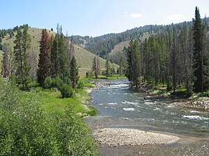
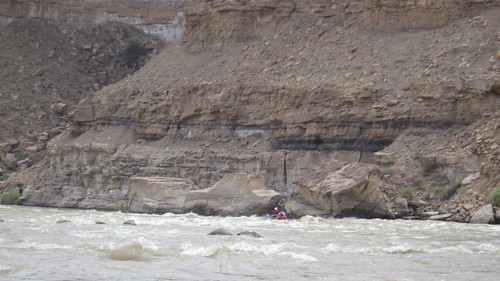
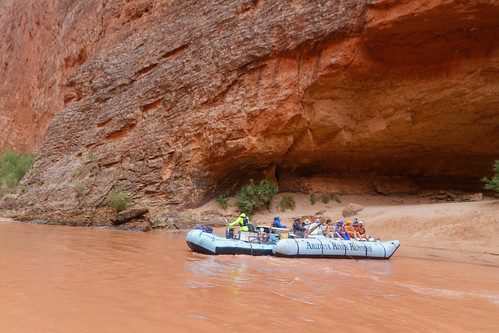

River Choices!

Main Fork of the Salmon River, Idaho
- nicknamed the river of no return because of how many people fell in love with the river and dont want to leave
- Herds of elk and deer graze on the hillsides around the river and bear and bighorn sheep are also commonly sighted
- one of the longest undammed rivers in the unided states
- rapids range from class I-IV

Desolation and Gray Canyon, Utah
- made famous by the desert scenery, high grey clifs, and great rapids
- 84 mile trip and runs from sand was to swaseys rapid
- recognzed as national landmark because of uniqueness and rich history
- rapids are class II/III

Grand Canyon, Arizona
- grand daddy of all canyons
- combines world class rapids with breathtaking scenery
- rapids range from class I-X on its unique rating scale, or I-V on the more familiar rating scale
- one of the longest undammed rivers in the unided states